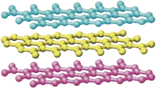
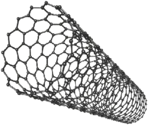
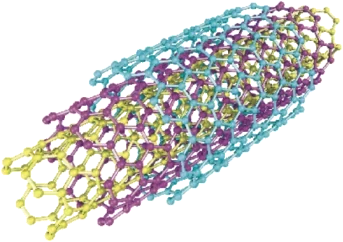

碳的变身术


碳的变身术
铅笔里，有铅吗？
笔芯里，是石墨
石墨
把笔迹放大，再放大
碳原子有 4 只手
 1234
1234手和手，离得越远越好
2 个气球：排成一条直线
3 个气球：平平地分开
1石墨里怎样拉手？

第 1 步：伸出 3 只手
第 2 步：跟着规矩连，会连成什么？
6 个碳，正好连成一圈！
为什么正好是六边形？
每个角 120° → 6 个
每个角 108° → 5 个
第 3 步：长成一张网
石墨烯
第 4 步：一层叠一层
层和层拉得松，一推就滑开
2金刚石怎样拉手？

钻石里，藏着什么？
石墨：软软的，黑黑的
钻石：硬硬的，亮晶晶
CC
都是碳原子！
4 只手全用上，会怎样伸？
第 1 步：一个碳，拉住 4 个邻居
第 2 步：每个邻居，也拉住 4 个
金刚石里，也藏着六边形？
是一个皱皱的六边形，像一把椅子
金刚石为什么这么硬？
石墨 一推就滑开
金刚石 推不动！
碳家族，还有谁？
 金刚石
金刚石

石墨
 石墨烯
石墨烯
 足球烯 C60
足球烯 C60

碳纳米管

多层碳纳米管
同样是碳，本领为什么不一样？
课后挑战